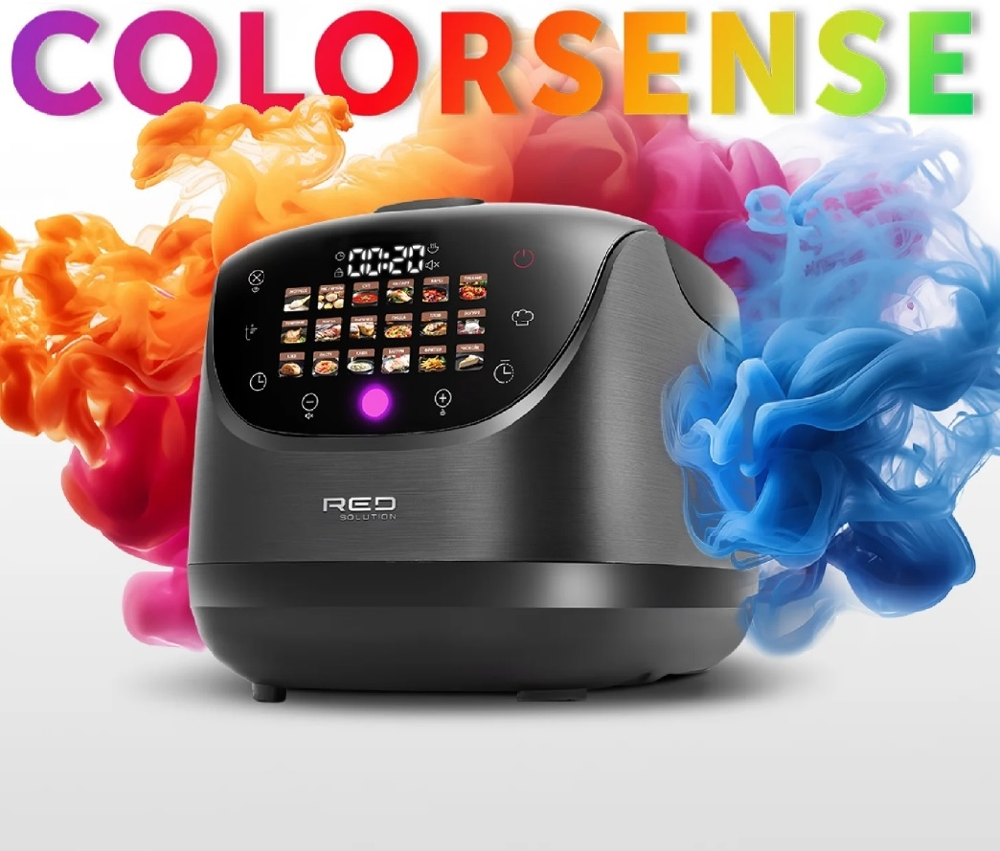

RED COLORSENSE MC200 multivārāmais katls
RED COLORSENSE MC200 multivārāmais katls – tas ir daudzfunkcionāla virtuves ierīce, ar kuru jūs varēsiet automātiski pagatavot gan ikdienas, gan svētku ēdienus. RGB indikācija Spilgta RGB indikācija skaidri parāda gatavošanas posmus: sarkans – notiek uzsildīšana, oranžs – notiek gatavošana, zaļš indikators – gatavošana pabeigta. Iestatot aizkavēto startu, indikācija iedegas violetā krāsā. Tagad sekot gatavošanas procesam ir vēl ērtāk un vienkāršāk. Sensoru displejs Sensoru vadības elementi un pilnkrāsu displejs ar režīmu attēlojumu palīdzēs ātri apgūt ierīci pat tiem, kas parasti izvairās no modernas tehnikas. Ergonomisks dizains Ērtie rokturi un mērskala uz trauka sienas ir paredzēti jūsu maksimālai ērtībai. Speciāls sensors neļaus ieslēgt multivārāmo katlu bez iekšējā vāka — tas ir noņemams un to var mazgāt trauku mazgājamajā mašīnā. Pretpiedeguma pārklājums Pateicoties zīmolotajam Daikin pretpiedeguma pārklājumam trauks vienmēr viegli mazgājas, un gatavot var bez eļļas – ēdiens nekad nepiedegs.
Funkcijas: • Automātiskā sildīšana līdz 12 st. • Iepriekšēja automātiskās sildīšanas izslēgšana • Atliktais starts līdz 24 st. • Ēdienu uzsildīšana • Multipavars • Vadības paneļa bloķēšana • Skaņas signālu izslēgšana • RGB indikācija
Programmu skaits: 19 Programmas: Ātrā gatavošana (Ekspress), Rīsi/Putraimi, Zupa, Tvaicēšana, Vārīšana, Sautēšana, Sutināšana, Cepšana, Cepšana (Mīklas izstrādājumi), Pica, Plovs, Jogurts, Maize, Pasta, Piena putra, Vakuums, Fritēšana, Siera kūka, Multipavars (no 35 līdz 180 °C ar soli 1 °C)
Recepšu grāmata ir pieejama pēc saites https://drive.google.com/file/d/148zvFDbFhvsF-thI8eRp9dG7l8YNzn2z/view
Cena- 129.00 EUR
Tējkanna Colorsense A11E
Tējkanna Colorsense A11E elegantā melnā krāsā – ideāla veiktspējas, stila un drošības kombinācija. Pateicoties ietilpīgajam 1,7 l tilpumam un 2000 W jaudai, tā īpaši ātri uzvāra ūdeni – ideāls risinājums rīta tējai vai ātrai kafijai starp darbiem.
Automātiskā izslēgšanās funkcija, aizsardzība pret iztvaikošanu un karstumizturīgs rokturis nodrošina maksimālu drošību ikdienas lietošanā. Bezvadu konstrukcija ar 360° pamatni nodrošina ērtumu gan kreiļiem, gan labročiem. Iekšējais pārklājums no augstas kvalitātes nerūsējošā tērauda un noņemamais pretkaļķa filtrs ne tikai garantē tīru ūdeni, bet arī vieglu tīrīšanu.
Priekšrocības:
Krāsaina sensoru vadības panelis
5 uzsildīšanas režīmi – 40°, 70°, 80°, 90°, 100° C
Automātiskā sildīšana – 2 stundas
Cool Touch tehnoloģija (inovatīva divsienu konstrukcija, kas nodrošina termosa efektu un aizsargā no apdegumiem)
Programmu skaits: 5 (bērnu pārtika, baltā tēja, zaļā tēja, kafija, vārīšana)
Temperatūras regulēšana 40°–100° C, solis 5°C
Rotācija par 360 grādiem
Cena- 35.00 EUR
Tējkanna Colorsense A15E
Tējkanna Colorsense A15E elegantā melnā krāsā – ideāla veiktspējas, stila un drošības kombinācija. Pateicoties ietilpīgajam 1,7 l tilpumam un 2000 W jaudai, tā īpaši ātri uzvāra ūdeni – ideāls risinājums rīta tējai vai ātrai kafijai starp darbiem.
Automātiskā izslēgšanās funkcija, aizsardzība pret iztvaikošanu un karstumizturīgs rokturis nodrošina maksimālu drošību ikdienas lietošanā. Bezvadu konstrukcija ar 360° pamatni nodrošina ērtumu gan kreiļiem, gan labročiem. Iekšējais pārklājums no augstas kvalitātes nerūsējošā tērauda un noņemamais pretkaļķa filtrs ne tikai garantē tīru ūdeni, bet arī vieglu tīrīšanu.
Priekšrocības:
Krāsaina sensoru vadības panelis
5 uzsildīšanas režīmi – 40°, 70°, 80°, 90°, 100° C
Automātiskā sildīšana – 2 stundas
Cool Touch tehnoloģija (inovatīva divsienu konstrukcija, kas nodrošina termosa efektu un aizsargā no apdegumiem)
Programmu skaits: 5 (bērnu pārtika, baltā tēja, zaļā tēja, kafija, vārīšana)
Temperatūras regulēšana 40°–100° C, solis 5°C
Rotācija par 360 grādiem
Cena- 39.00 EUR
Kontakti
REDMOND veikals 📱 +37127552280 Lielā iela 19 k-1, Mārupe, LV-2167 info@redmond.lv Veikala darba laiks: P. 10.00-19.00 O. 10.00-19.00 T. 10.00-18.00 C. 10.00-19.00 P. 10.00-19.00 S. 11.00-15.00 Sv.- slēgts